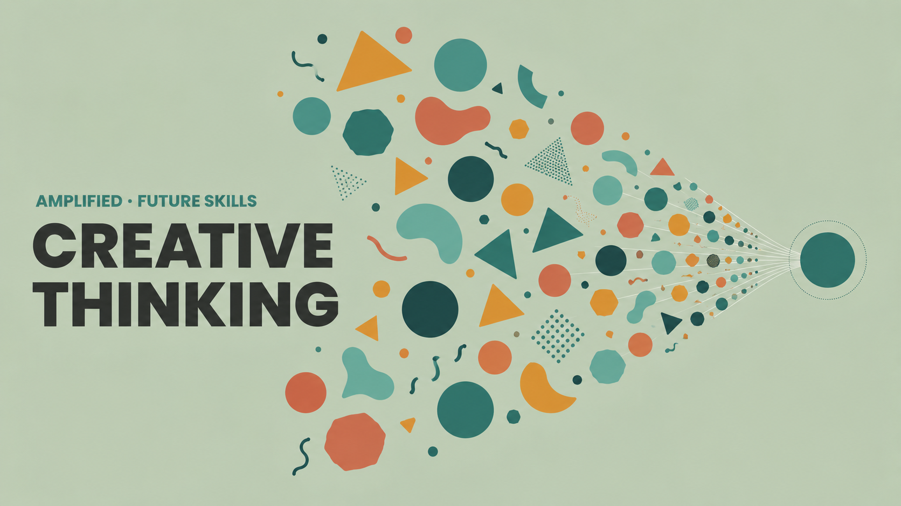

Most teams recombine the same three ideas and call it innovation. This skill builds the discipline to expand the solution space before narrowing it.

Video generated by Gemini Notebook from this page's content.
When most teams try to innovate, they usually end up taking the exact same three ideas and putting them in a new font. You run a brainstorm, you get small variations on precedent, and eventually the entire process grinds to a halt. Pause and pick one specific stuck problem you deal with at work right now. Maybe it's a process nobody questions, or a monthly status report that nobody actually reads. Keep that problem in mind.
If your engagement is flat, the solution isn't to write a shorter summary or pick a better template. The issue you are facing is an idea problem. To unstick that problem, you need to deliberately expand your solution space. You have to force a wide range of alternatives onto the table before you ever let yourself narrow down to a final choice.
This diagram maps the divergent–convergent cycle. You must draw a hard line between creating ideas and judging them. Start on the left — the divergent phase — generating massive volume without any criticism. If you judge ideas immediately, volume drops to zero. Only after generating do you move to the convergent phase on the right, turning critical thinking back on to judge the raw materials. If you merge these phases, you automatically collapse back into the very first plausible — and usually boring — idea that comes to mind.
To make sure your divergent phase actually works, you can use a lateral thinking technique called Assumption Reversal. Look at this text example for team training. Step one: write your problem's default framing — here, training happens in a scheduled session. Step two: name the invisible assumption — we assume learning requires everyone in the same place. Step three: invert it. What if no one is ever in the same place? That single flip gives a radically different starting point: asynchronous, self-paced modules. The reversal doesn't have to be entirely realistic. The goal is simply to force your brain off its original track, exploring completely new territory.
Once you have a new starting point, you can force even more volume by borrowing structure from unrelated areas using a checklist called SCAMPER. Brainstorms usually fail because people sit around waiting for a bolt of inspiration. SCAMPER acts as a mechanical engine to generate volume on demand. This checklist applies seven deliberate variations to a fixed idea. Take that monthly status report. If we run it through the Eliminate prompt, we drop the document entirely and replace it with a 5-minute live Q&A. Instead of wasting six months trying to format a document that nobody wants to read, you alter the medium itself.
Here is your constraint: take your stuck problem and run it through all seven letters of the SCAMPER checklist in under five minutes. By combining a rigid structure with a ticking clock, you leave your inner critic behind. When the five minutes are up, you will have a minimum of seven distinct working variations.
Now that you have volume, you can finally transition into the convergent phase. You have permission to turn your critical thinking back on. The left side of the diagram is full of the varied options you generated. You aggressively test these against real-world constraints like budget and capacity, discarding what doesn't fit. You run the gauntlet until left with the single most viable option. This is good decision-making. You aren't just grabbing the first workable idea — you are making a confident selection from a genuine range of alternatives.
This comparison shows the actual cost of staying stuck. You can spend six months tweaking headers, or you can expand the solution space and fix the root problem with a single prompt. Creative Thinking is strictly a trainable discipline. It requires you to generate options before you judge them — every single time.
Next time your team is stuck, mandate that everyone runs their problem through SCAMPER before anyone is allowed to critique a single idea. When you treat your first idea as a starting point instead of the final answer, you stop reacting to familiar problems and start actually solving them.
Without Creative Thinking, teams reach for what's familiar and call it a solution. The first workable idea gets treated as the only idea. Brainstorms default to small variations on precedent, and the solution space never actually opens up. The cost is invisible — until the same stuck problem is still stuck a year later.
A process nobody's touched in years because "that's how it's done." A brainstorm that produces four ideas that are really one idea. A team that's optimized the same solution for the third year running instead of questioning it.
The ability to take any stuck problem and generate a genuine range of alternatives — by naming the assumption behind the current approach, borrowing structure from somewhere unrelated, and separating the act of generating ideas from the act of judging them.
Creative Thinking is the practice of generating original ideas by deliberately breaking pattern, recombining unrelated concepts, and expanding a problem's solution space — before narrowing to what's worth pursuing.
Analytical Thinking dissects. Creative Thinking generates. One breaks a problem down into a structured picture; the other opens up what could be done about it. Both are trainable disciplines, not personality traits.
Produces the picture — what's happening and why. Creative Thinking asks what you could do about it. You need the picture before you can generate meaningful options from it.
Tests a conclusion and produces a judgment — sound, questionable, missing. Creative Thinking picks up from there, generating alternatives once that judgment exists.
Bob Eberle, built on Alex Osborn's checklist · 1971
Seven prompts that force a fixed idea through deliberate variations. It doesn't wait for inspiration — it manufactures volume by applying the same checklist every time.
A monthly status report nobody reads: Eliminate the report entirely, replace it with a 5-minute live Q&A. One prompt, one working alternative.
J.P. Guilford · popularized in design practice
Two separate phases, deliberately kept apart. Diverge first — generate volume without judging any of it. Then converge — apply judgment only once generation has stopped. Merging the two collapses back into the first plausible idea.
Lateral thinking · Edward de Bono
Name the assumption baked into how a problem is currently framed. Then deliberately invert it — not because the reversal is true, but because it forces a genuinely different starting point.
Default framing: "Training has to happen in a scheduled session"
Hidden assumption: Learning requires everyone in the same place at the same time
Reversed: What if no one is ever in the same place at the same time?
NEW STARTING POINT: ASYNCHRONOUS, SELF-PACED MODULES
Engagement with the report is flat. The team tweaks the format — shorter summary, better headers, a new template. Six months later, engagement is still flat.
Every fix stayed inside the same idea: a written report people are supposed to read. Nobody questioned whether a report was the right format at all.
The team runs the report through SCAMPER. The "Eliminate" prompt asks: what if the report didn't exist at all?
The report is replaced with a 5-minute live Q&A at the start of an existing meeting. Engagement isn't a formatting problem — it was a format problem. The fix took one prompt, not six months of tweaking.
Creative Thinking is the discipline of expanding a problem's solution space before narrowing it. It means generating before judging, borrowing structure from unrelated domains, and treating the first idea as a starting point, not an answer.
The output is a genuine range of alternatives — not the final choice, but the raw material any good decision needs to draw from.
Ready to go deeper?
The Full Learning Plan covers first principles, mental models, behavioural indicators, and a 5-day habit builder — around 60–75 minutes of structured practice.
Open Full Learning Plan